![[商品価格に関しましては、リンクが作成された時点と現時点で情報が変更されている場合がございます。]](https://hbb.afl.rakuten.co.jp/hgb/53ed53b4.51bddb4d.53ed53b5.d44ce6f4/?me_id=1213310&item_id=21809056&pc=https%3A%2F%2Fthumbnail.image.rakuten.co.jp%2F%400_mall%2Fbook%2Fcabinet%2F7631%2F9784839217631_1_2.jpg%3F_ex%3D240x240&s=240x240&t=picttext "[商品価格に関しましては、リンクが作成された時点と現時点で情報が変更されている場合がございます。]") | 見て書いて覚える！看護学生のための解剖生理学ワーク＆テスト [ 高野 海哉 ] |
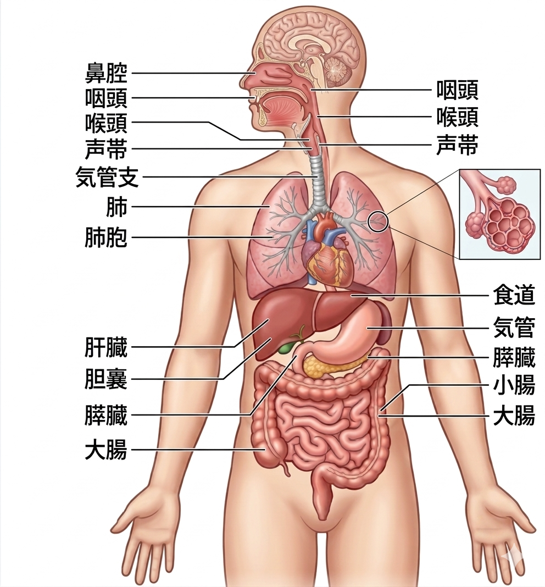
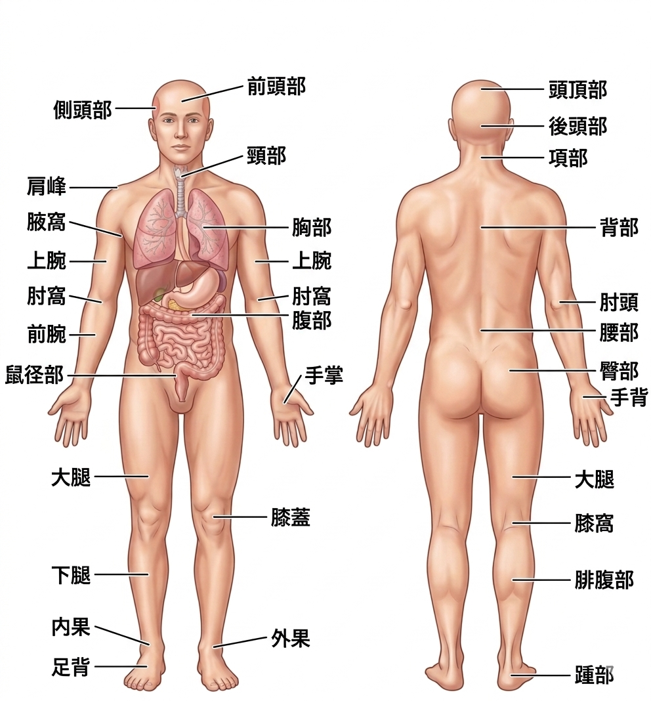
| 画像にある専門的な用語 | 普段使っている単語 |
|---|---|
| 前頭部 | 頭の前、額のあたり |
| 側頭部 | 頭の両側、耳の上あたり |
| 頸部 | 首 |
| 肩峰 | 肩先 |
| 腋窩 | 脇の下 |
| 上腕 | 二の腕 |
| 肘窩 | 肘の内側 |
| 手掌 | 手のひら |
| 腹部 | おなか |
| 鼠径部 | 体幹と下肢の境目（”コマネチ”←この言い方は微妙かも） |
| 大腿 | 太もも |
| 膝蓋 | 膝がしら |
| 外果 | 外くるぶし |
| 内果 | 内くるぶし |
| 足背 | 足の甲 |
| 頭頂部 | 頭のてっぺん |
| 後頭部 | 頭の後ろ |
| 項部 | うなじ |
| 手背 | 手の甲 |
| 肘頭 | 肘の出っ張り |
| 背部 | 背中 |
| 腰部 | 腰 |
| 臀部 | お尻 |
| 膝窩 | 膝の裏 |
| 腓腹部 | ふくらはぎ |
| 踵部 | かかと |
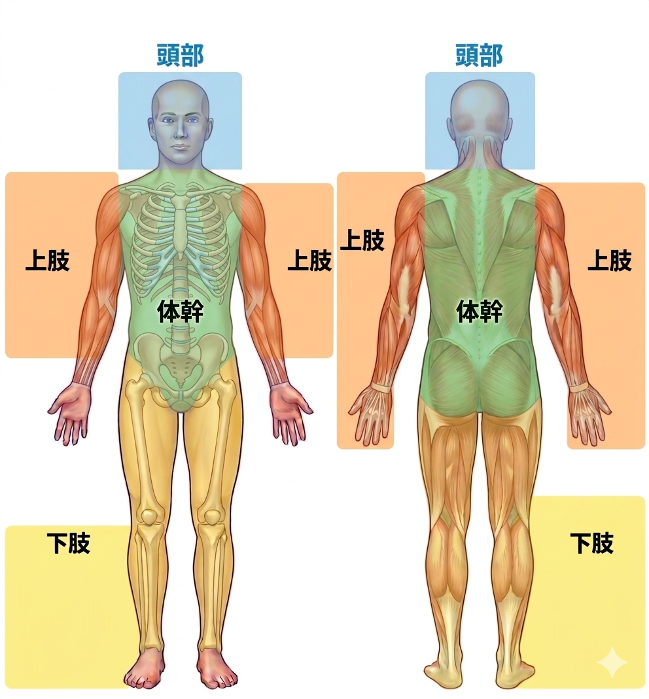
| 画像にある専門的な用語 | 対象となる細かい部位 |
|---|---|
| 上肢 | 上腕、前腕、手 |
| 頭部 | 前頭部、後頭部、側頭部 |
| 体幹 | 胸部、腹部、背部、骨盤部 |
| 下肢 | 大腿、下腿、足 |
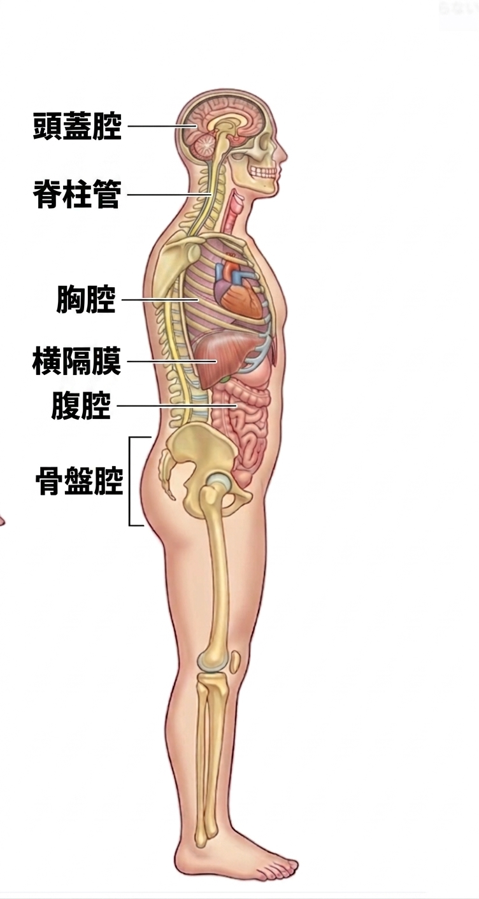
| 腔所 | 囲んでいる構造（骨など） | 腔所の中にある臓器、器官 |
|---|---|---|
| 頭蓋腔 | 頭蓋骨 | 脳、感覚器（眼、耳、鼻、舌）など |
| 脊柱管 | 脊柱 | 脊髓 |
| 胸腔 | 胸郭 | 心臓、肺、気管、食道、胸部の大動脈、上大動脈 |
| 横隔膜 | 胸腔と腹腔の間にあり、境界となる骨格筋。肺を膨らませる働きがある | |
| 腹腔 | 前：腹筋群 後ろ：脊柱 | 胃、小腸、大腸、肝臓など |
| 骨盤腔（腹腔との境界はないため、腹腔として扱うこともある） | 骨盤 | 膀胱、大腸（直腸）、卵巣、卵管、子宮など |
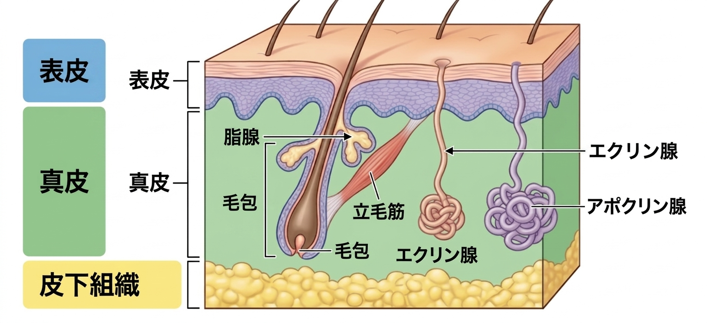
| 皮膚の構造 | 特徴 |
|---|---|
| 表皮 | 最も表面の層。主に |
| 真皮 | 表皮の下層。主にコラーゲンや線維芽細胞という細胞で構成されており、血管やリンパ管が分布している。 |
| 皮下組織 | 真皮の下層。脂肪細胞で構成している場合は皮下脂肪と呼ばれることもある。 |
| 脂腺 | 脂肪分の多い分泌物を体毛の周囲に分泌し、体毛や皮脂の表面をしなやかに保つ。 |
| エクリン腺 | 主に暑いときにかく、水分の多い汗を分泌する。 |
| アポクリン腺 | たんぱく質の多い汗を分泌し、毛包の表面を保護する |
| 毛包 | 表皮が特異に変化したものであり、体毛の生じる部分。 |
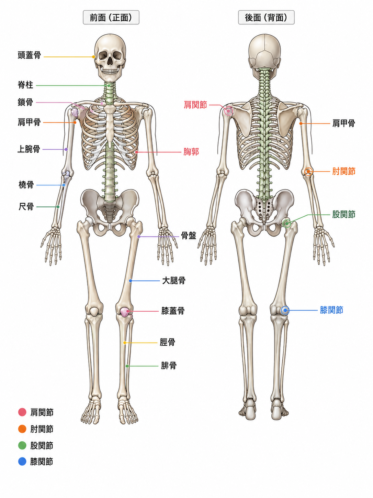
| 主な骨の名称 | 場所 |
|---|---|
| 頭蓋骨 | 頭部の骨格 |
| 脊柱 | 背部の骨格であり、頸椎：7個、胸椎：12個、腰椎：5個、仙椎：5個（癒合して一つの仙骨となる）、尾椎：2～5個からなる |
| 胸郭 | 胸部の骨格であり、胸部の臓器を保護する。 |
| 骨盤 | 腰部、臀部の骨格 |
| 鎖骨・肩甲骨 | 上肢を体幹につなぐ骨格 |
| 上腕骨 | 上腕の骨格 |
| 橈骨・尺骨 | 前腕の骨格 |
| 大腿骨 | 大腿の骨格 |
| 膝蓋骨 | 膝の骨格 |
| 脛骨・腓骨 | 下腿の骨格 |
| 肩関節 | 肩の関節 |
| 肘関節 | 肘の関節 |
| 股関節 | 股の関節 |
| 膝関節 | 膝の関節 |
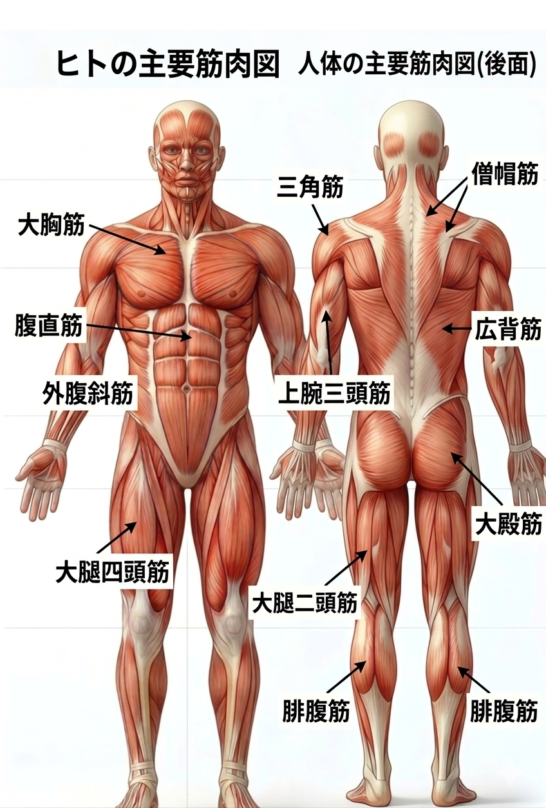
| 主な骨格筋の名称 | 場所 |
|---|---|
| 大胸筋 | 胸板 |
| 腹直筋 | おなかの中央にある筋（シックスパックとか。。。） |
| 外腹斜筋 | 腹直筋の横にある筋 |
| 三角筋 | 肩先の包むような筋 |
| 上腕二頭筋 | 二の腕の前面、力こぶを作る筋 |
| 大腿四頭筋 | 太ももの前面の筋 |
| 僧帽筋 | 肩を包む首から背中に向けての筋 |
| 大殿筋 | おしりの筋 |
| 広背筋 | 背中の筋 |
| 大腿二頭筋 | 太ももの後ろ側の筋 |
| 腓腹筋 | ふくらはぎの筋 |
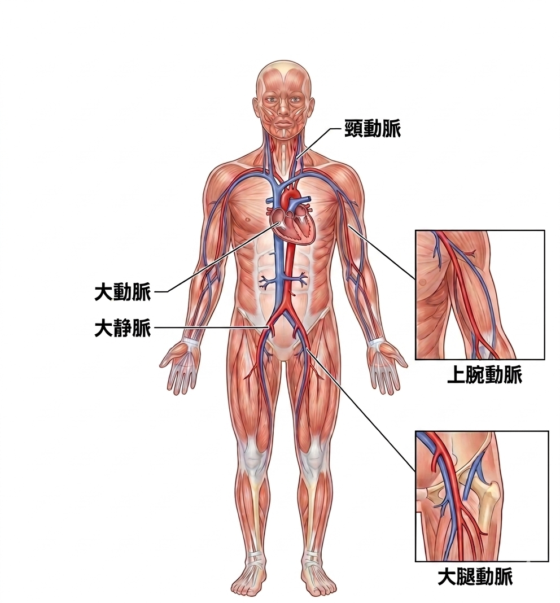
| 主な血管の名称 | 場所・特徴 |
|---|---|
| 心臓 | 血液を送るためのポンプ |
| 大動脈 | 体幹部の太い動脈 |
| 大静脈 | 体幹部の太い静脈 |
| 頸動脈 | 頸部の動脈、頭部に向かう血管が通る。 |
| 上腕動脈 | 上肢に向かう血管であり、鎖骨の下をくぐり、腋窩を通って血液を送る。 |
| 大腿動動脈 | 下肢に向かう血管であり、鼠経を通過する。 |

| 主な消化器の名称 | 場所・特徴 |
|---|---|
| 唾液腺 | 口腔内に唾液という糖質を分解する消化酵素（アミラーゼ）を分泌する器官 |
| 肝臓 | 胃・小腸・大腸で吸収した物質が血流によって運ばれる場所です。栄養素を体内で利用できるようにしたり、毒物や薬物を無害なものに分解したり、胆汁の生成をしたり、糖質をグリコーゲンの形で貯蔵したりしています。横隔膜のすぐ下の腹腔の右側にある |
| 胆嚢 | 胆汁を一時的に蓄える場所です。蓄えられた胆汁は必要な時に十二指腸の第十二指腸乳頭（ファーター乳頭）から放出される。 |
| 膵臓 | 膵臓は胃の後ろに隠れるように位置して、アミラーゼ・トリプシン・リパーゼなどの消化酵素をファーター乳頭に放出する。また、ランゲルハンス島という内分泌組織を持ち、インスリンやグルカゴンなど、血糖に作用するホルモンを分泌する。 |
| 口腔 | 食べ物、飲み物の入り口であり、食べ物を細かくするための歯や味覚を受容する舌がある。 |
| 咽頭 | 口腔の次に飲み込んだものが通る場所。 |
| 食道 | 咽頭から続き、胸腔内を下降し、横隔膜を貫いて腹腔内に入る胃につながる器官。 |
| 胃 | 食道からつながる横隔膜のすぐ下の臓器であり、強酸により食物を体に吸収されやすくする働きを持つ、腹腔の左側にある。 |
| 小腸 | 胃から続き、十二指腸、空腸、回腸に分けられる臓器。食物の消化と吸収を行う。 |
| 大腸 | 小腸から続く、盲腸、結腸、直腸からなる臓器、小腸で消化できなかったものから水分を吸収して体外に便として排出する。 |

| 主なリンパ系の名称 | 場所・特徴 |
|---|---|
| 胸管 | 胸腔内を通る人体で最も太いリンパ管。 |
| リンパ節 | リンパ管が集まる場所であり関節部に多く存在する。免疫の働く細胞が多く存在する。 |
| リンパ管 | 組織液の一部がリンパ液として回収され、運搬される場所。 |
| 扁桃 | のどの粘膜に位置し、免疫にかかわる細胞が多く存在する組織。 |
| 胸腺 | 骨髄で生まれた未熟なリンパ球を成熟させる働きを有する組織。 |
| 脾臓 | 免疫にかかわる細胞が存在するとともに、古くなった赤血球を壊す働きがあります。 |
| 骨髄 | 骨の中にあり、リンパ球や血球が生まれる。 |

| 主な呼吸器系の名称 | 場所・特徴 |
|---|---|
| 鼻腔 | 吸い込んだ空気が最初に入る部分で、最も上部に臭いを受容する部分（嗅覚器）がある。 |
| 咽頭 | 空気が通る喉の部分。 |
| 喉頭 | のどぼとけの部分。発生するための声帯がある。 |
| 気管 | 喉と肺をつなぐ部分。 |
| 気管支 | 気管が左右の肺に向かって枝分かれしていく部分。肺の中でさらに細かく枝分かれする（細気管支） |
| 肺 | 気管支は最終的に袋状の肺胞にあり、空気中の酸素を血中に取り込み、血中の二酸化炭素を呼気中に排出します。 |
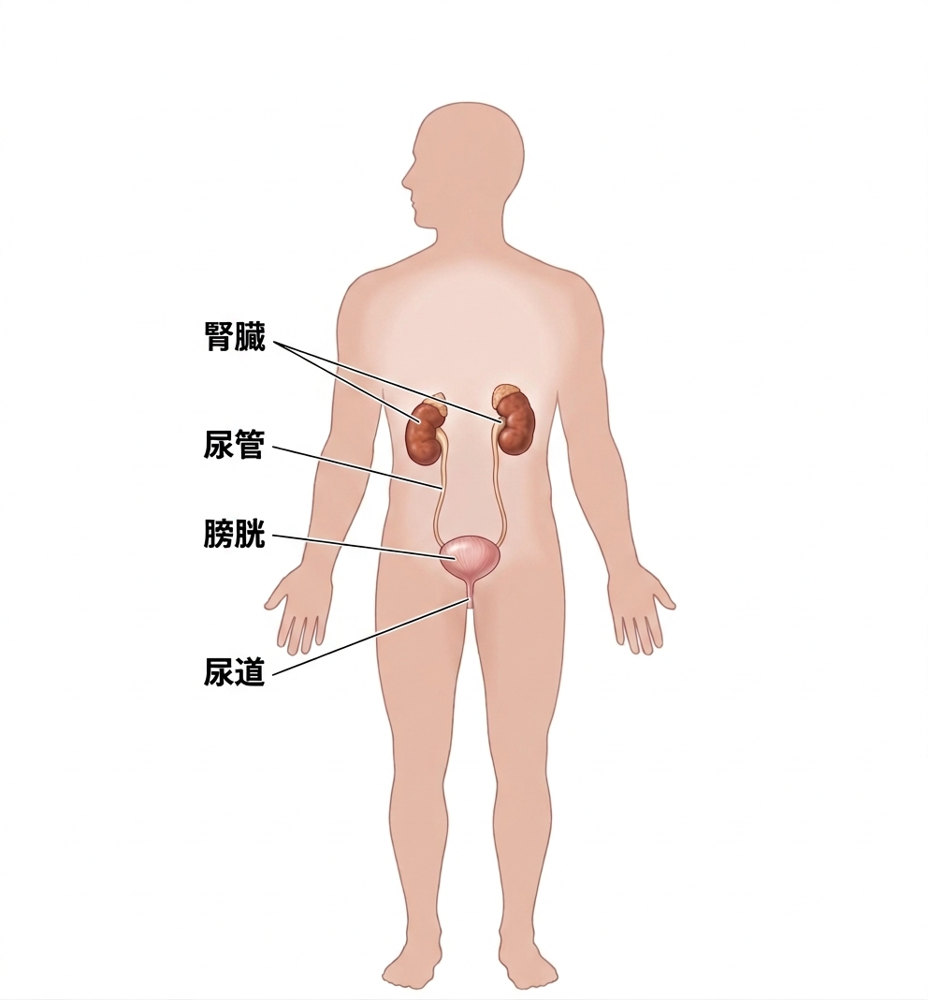
| 主な泌尿器の名称 | 場所・特徴 |
|---|---|
| 腎臓 | 血液をろ過して、血液に含まれている不要な物質を尿として排出するのが主な働きである。そのほかにも、血中の水分や電解質の濃度も調整したり、骨髄に作用して赤血球の生産を促進するエリスロポエチンを分泌したり、血圧を上昇させるレニンを血中に分泌する内分泌器官としても働く。 |
| 尿管 | 腎臓で作られた尿を膀胱へ送る管 |
| 膀胱 | 尿管からつながる平滑筋でできた袋状の器官。排泄できる状況になるまで尿を貯蔵する。 |
| 尿道 | 膀胱から体外へ尿を導き出す管状の部分。女性は約４～６cmであり男性が約16～20cmである。 |
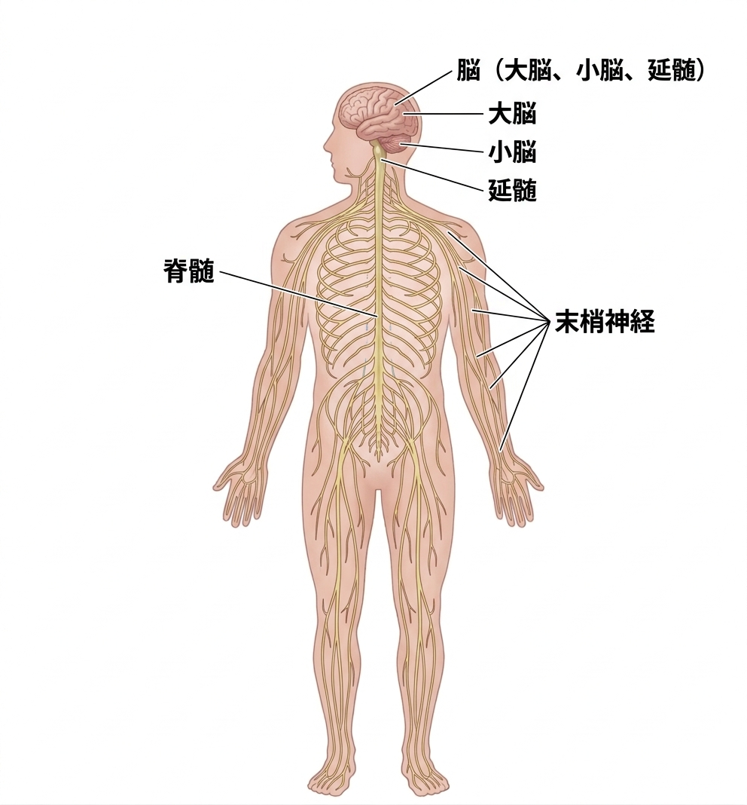
| 主な神経系の名称 | 場所・特徴 |
|---|---|
| 脳 | 大脳・小脳・脳幹に分かれ、これらと脊髄合われてを中枢神経という。また、脳から出入りする神経を脳神経といい、末梢神経である。 |
| 脊髄 | 脳と連携して、神経信号を伝達する。無数の末梢神経が出ている。 |
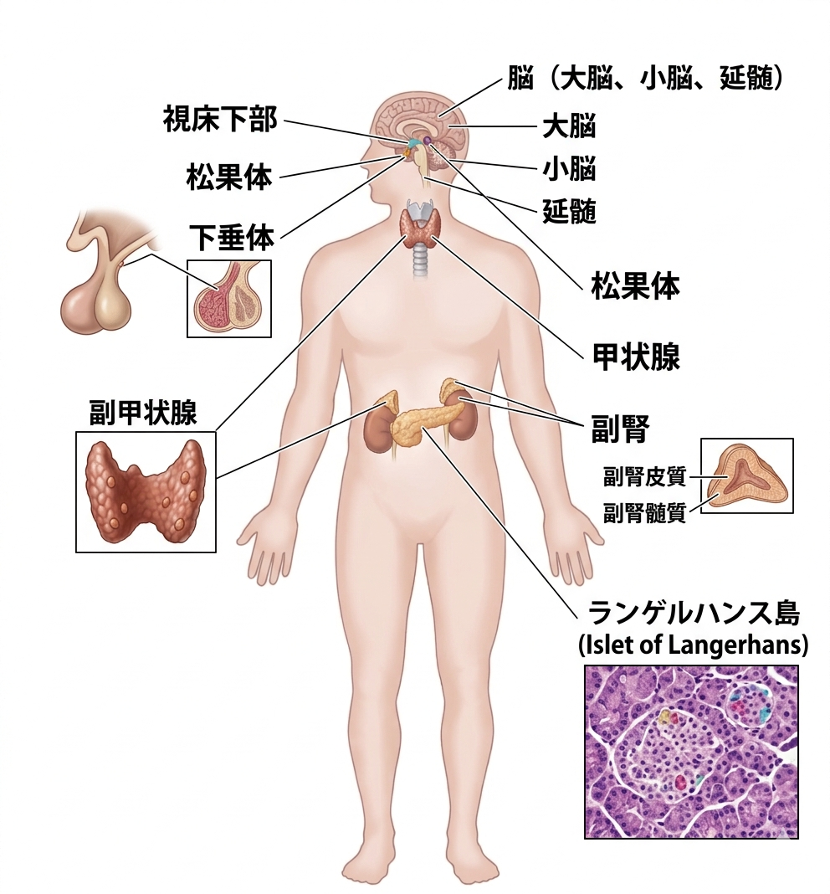
| 主な内分泌系の名称 | 場所・特徴 | 分泌されるホルモンの例 |
|---|---|---|
| 視床下部 | 脳の一部であり、ホルモンを作る神経細胞が集まっている。 | 放出ホルモン、抑制ホルモン |
| 下垂体 | 視床下部の下。 | 前葉：甲状腺刺激ホルモン、副腎皮質刺激ホルモン、性腺刺激ホルモン、成長ホルモン、プロラクチン 後葉：バソプレシン、オキシトシン |
| 松果体 | 視床下部の後ろ。 | メラトニン |
| 甲状腺 | のどぼとけのすぐ下。 | トリヨードサイロニン、サイロキシン、カルシトニン |
| 副甲状腺 | 甲状腺の後ろ。 | パラソルモン |
| 副腎 | 腎臓のすぐ上。 | アドレナリン、アンドロゲン、コルチゾール、アルドステロン |
| 膵臓（ランゲルハンス島） | 膵臓内のホルモンを作る細胞が集まった組織 | インスリン、グリカゴン、ソマトスタチン |